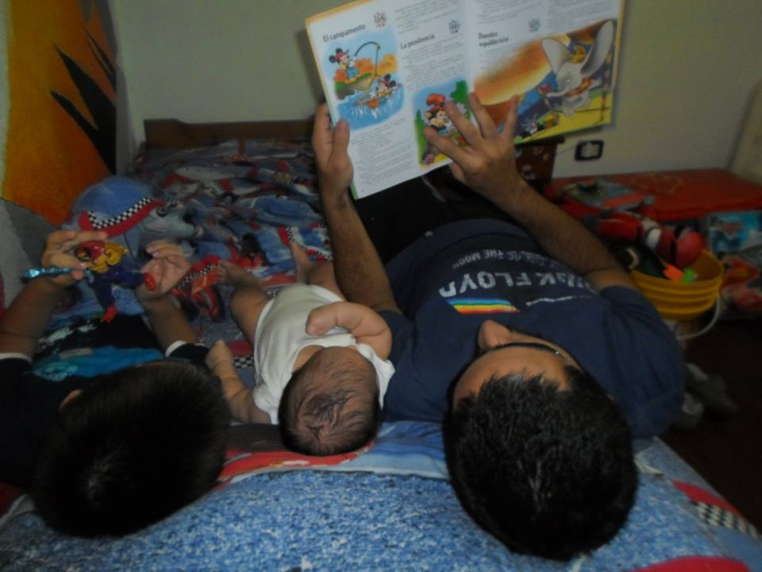

Cuando empecé la primaria, recuerdo haberme preguntado ¿Hasta cuándo hay que
ir al colegio?. Indagué un poco y me enteré de la existencia de la secundaria,
la universidad y luego de hacer algunas cuentas con los dedos llegué a la
respuesta: hasta los 25 años. Más o menos.
Luego de sorprenderme de mi flamante capacidad de anticiparme a los hechos a mi
tan corta edad, lo encuentro a mi papá enfrascado en sus estudos. ¿Estudiando?
Pero... ¿vos cuántos años tenés? y la respuesta que me dió fue una de las
primeras que me marcaron de arriba abajo en la vida: Ari, eso no importa; uno
tiene que estudiar siempre. Pero ese siempre parecía una promesa tan
cruel, que no me atreví a creerle.
La verdad de la milanesa
La primaria pasó. La secundaria pasó. Empecé la universidad, aprendí a
programar y me puse a trabajar. En medio de todo eso vino el cachetazo de que
sí, uno nunca deja de estudiar... pero sí puede dejar de aprender. Seguir
aprendiendo durante tu vida adulta puede ser mucho más difícil de lo que fue
durante tu adolescencia y más aún si no se mantiene ese músculo en ejercicio;
un día en el que aprendiste algo nuevo es un día bien aprovechado es lo que
dice mi mamá.
Dejar de aprender significa cerrarse uno mismo las puertas nuevas
posibilidades, aislarse. Si un día llegás a pensar que ya sabés suficiente o
sentís (y/o verificás) que lo que ya sabés te impide aprender cosas nuevas
(¡no tengo tiempo para eso!), entonces estás caminando en un sendero que
te lleva siempre al mismo lugar a donde estás. Y vivir se trata de estar en
movimiento.
El plan

Nunca es tarde y siempre hay algo para aprender: tocar la guitarra, programar,
revocar una pared, jardinería, tejer... si te gusta, hacelo; aprendé todo
lo que puedas, leé todos los días. Llevate un libro/revista/apunte de eso que
querés aprender en el bolso o mochila para aprovechar esos tiempos muertos como
las filas o turnos en el dentista (a nadie le interesan esas revistas de vinos
o barcos). Si te gusta, vas a leer sobre eso incluso en tus vacaciones; no va a
ser una carga sino que va a ser un placer por que te llama y te atrae. Y si es
una carga porque te diste cuenta que en realidad no te interesa tanto como
creías, entonces pasá a otra cosa que te llame la atención. Buscá y hablá con
otros que practiquen eso que estás aprendiendo, que tengan los mismos intereses
y compartí experiencias. Escuchá y ayudá a otros que recién empiezan, porque
eso también es aprender. Buscar qué no sabés para poder aprenderlo y esta
actitud se hará una costumbre.
Dejá de ver televisión durante 1 hora, nada más. Jugá a los videos 1 hora
menos. Dormí una hora menos. Y leé o practicá. No es fácil pero vale la pena
intentarlo porque al final de cuentas, es por vos mismo que estás haciendo el
esfuerzo.
Entonces...
Nunca dejes de leer y, sobre todo, nunca dejes de aprender.